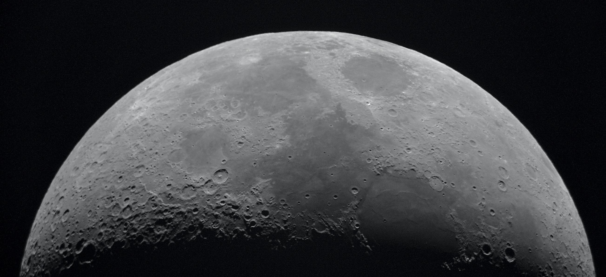

To the moon

Travel to the moon
Lunar tourism may be possible in the future if trips to the Moon are made available to a private audience. Some space tourism startup companies are planning to offer tourism on or around the Moon, and estimate this to be possible sometime between 2023 and 2043.